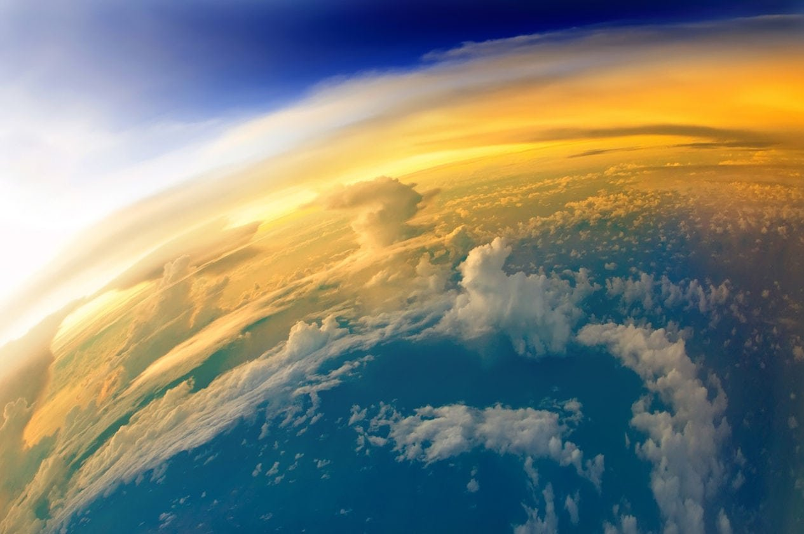

Косми́ческое простра́нство, ко́смос (др.-греч. κόσμος — «упорядоченность», «порядок») — относительно пустые участки Вселенной, которые лежат вне границ атмосфер небесных тел. Космос не является абсолютно пустым пространством: в нём есть, хотя и с очень низкой плотностью, межзвёздное вещество (преимущественно молекулы водорода), кислород в малых количествах (остаток после взрыва звезды), космические лучи и электромагнитное излучение, а также гипотетическая тёмная материя.
Чёткой границы не существует,атмосфера разрежается постепенно по мере удаления от земной поверхности, и до сих пор нет единого мнения, что считать фактором начала космоса. Если бы температура была постоянной, то давление бы изменялось по экспоненциальному закону от 100 кПа на уровне моря до нуля. Международная авиационная федерация в качестве рабочей границы между атмосферой и космосом установила высоту в 100 км (линия Кармана), потому что на этой высоте для создания подъёмной аэродинамической силы необходимо, чтобы летательный аппарат двигался с первой космической скоростью, из-за чего теряется смысл авиаполёта.  Астрономы из США и Канады измерили границу влияния атмосферных ветров и начала воздействия космических частиц. Она оказалась на высоте 118 километров, хотя само NASA считает границей космоса 122 км. На такой высоте шаттлы переключались с обычного маневрирования с использованием только ракетных двигателей на аэродинамическое с «опорой» на атмосферу
Как утверждают учёные НАСА, вопреки распространённым представлениям, при попадании в открытый космос без защитного скафандра человек не замёрзнет, не взорвётся и мгновенно не потеряет сознание, его кровь не закипит — вместо этого настанет смерть от недостатка кислорода. Опасность заключается в самом процессе декомпрессии — именно этот период времени наиболее опасен для организма, так как при взрывной декомпрессии пузырьки газа в крови начинают расширяться. Если присутствует хладагент (например, азот), то при таких условиях он замораживает кровь. В космических условиях недостаточно давления для поддержания жидкого состояния вещества (возможны лишь газообразное или твёрдое состояние, за исключением жидкого гелия), поэтому вначале со слизистых оболочек организма (язык, глаза, лёгкие) начнёт быстро испаряться вода. Некоторые другие проблемы — декомпрессионная болезнь, солнечные ожоги незащищённых участков кожи и поражение подкожных тканей — начнут сказываться уже через 10 секунд. В какой-то момент человек потеряет сознание из-за нехватки кислорода. Смерть может наступить примерно через 1-2 минуты, хотя точно это не известно. Тем не менее, если не задерживать дыхание в лёгких (попытка задержки приведёт к баротравме), то 30-60 секунд пребывания в открытом космосе не вызовут каких-либо необратимых повреждений человеческого организма[6]. В НАСА описывают случай, когда человек случайно оказался в пространстве, близком к вакууму (давление ниже 1 Па) из-за утечки воздуха из скафандра. Человек оставался в сознании приблизительно 14 секунд — примерно такое время требуется для того, чтобы обеднённая кислородом кровь попала из лёгких в мозг. Внутри скафандра не возник полный вакуум, и рекомпрессия испытательной камеры началась приблизительно через 15 секунд. Сознание вернулось к человеку, когда давление поднялось до эквивалентного высоте примерно 4,6 км. Позже попавший в вакуум человек рассказывал, что он чувствовал и слышал, как из него выходит воздух, и его последнее осознанное воспоминание состояло в том, что он чувствовал, как вода на его языке закипает. Журнал «Aviation Week and Space Technology» 13 февраля 1995 г. опубликовал письмо, в котором рассказывалось об инциденте, произошедшем 16 августа 1960 года во время подъёма стратостата с открытой гондолой на высоту 19,5 миль (около 31 км) для совершения рекордного прыжка с парашютом (Проект «Эксельсиор»). Правая рука пилота оказалась разгерметизирована, однако он решил продолжить подъём. Рука, как и можно было ожидать, испытывала крайне болезненные ощущения, и ею нельзя было пользоваться. Однако при возвращении пилота в более плотные слои атмосферы состояние руки вернулось в норму. Космонавт Михаил Корниенко и астронавт Скотт Келли, отвечая на вопросы, сообщили, что нахождение в открытом космосе без скафандра может привести к выходу азота из состава крови, заставив её, по сути, кипеть.
{kind=link}